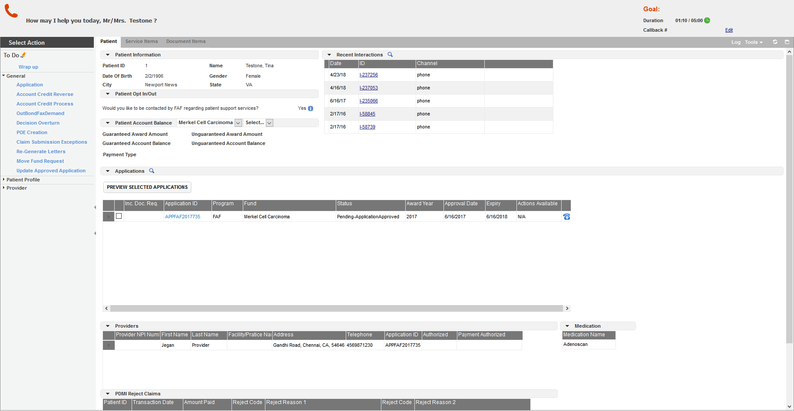

Test Case Steps
Test Case Name: CPR_Smoke_Test_firefox
Test Case Name: CPR_Smoke_Test_firefox
Reason for Failure: No such Element exists{acceptInsecureCerts: true, browserName: firefox, browserVersion: 58.0.2, javascriptEnabled: true, moz:accessibilityChecks: false, moz:headless: false, moz:processID: 8692, moz:profile: C:\Users\Babu\AppData\Local..., moz:webdriverClick: true, pageLoadStrategy: normal, platform: XP, platformName: XP, platformVersion: 10.0, rotatable: false, timeouts: {implicit: 0, pageLoad: 300000, script: 30000}} Session ID: 07f4e31b-c0a1-42a0-94cf-348ec80e2657 *** Element info: {Using=id, value=cpmTabbedNavigation-DIVFrame
Click Me to Show/Hide the Full Stack Trace
Test Case Name: CPR_Smoke_Test_firefox
Execution Platform Details
| O.S | : | Windows 10, amd64Bit, V10.0 |
| Browser | : | firefox,58.0.2 | Java | : | 1.8.0_161 |
| Hostname | : | LAPTOP-TBBKICN8 |
| Selenium | : | 3.10.0 |
Test Snapshot
| Status | : | Failed |
| Execution Date | : | 29-May-2018 04:23:50 | 116 s |
| S.No | Test Procedure | Input Data | Expected Results | Actual Value | Time | Status | Screen shot |
|---|---|---|---|---|---|---|---|
| 1 | Failed to find Element | 118 s |  |
 |
Test Case Name: CPR_Smoke_Test_firefox
Reason for Failure: No such Element exists{acceptInsecureCerts: true, browserName: firefox, browserVersion: 58.0.2, javascriptEnabled: true, moz:accessibilityChecks: false, moz:headless: false, moz:processID: 8692, moz:profile: C:\Users\Babu\AppData\Local..., moz:webdriverClick: true, pageLoadStrategy: normal, platform: XP, platformName: XP, platformVersion: 10.0, rotatable: false, timeouts: {implicit: 0, pageLoad: 300000, script: 30000}} Session ID: 07f4e31b-c0a1-42a0-94cf-348ec80e2657 *** Element info: {Using=id, value=cpmTabbedNavigation-DIVFrame
Click Me to Show/Hide the Full Stack Trace
org.openqa.selenium.NoSuchElementException: Unable to locate element: #cpmTabbedNavigation\-DIVFrame
For documentation on this error, please visit: http://seleniumhq.org/exceptions/no_such_element.html
Build info: version: '3.10.0', revision: '176b4a9', time: '2018-03-02T19:03:16.397Z'
System info: host: 'LAPTOP-TBBKICN8', ip: '192.168.12.153', os.name: 'Windows 10', os.arch: 'amd64', os.version: '10.0', java.version: '1.8.0_161'
Driver info: org.openqa.selenium.firefox.FirefoxDriver
Capabilities {acceptInsecureCerts: true, browserName: firefox, browserVersion: 58.0.2, javascriptEnabled: true, moz:accessibilityChecks: false, moz:headless: false, moz:processID: 8692, moz:profile: C:\Users\Babu\AppData\Local..., moz:webdriverClick: true, pageLoadStrategy: normal, platform: XP, platformName: XP, platformVersion: 10.0, rotatable: false, timeouts: {implicit: 0, pageLoad: 300000, script: 30000}}
Session ID: 07f4e31b-c0a1-42a0-94cf-348ec80e2657
*** Element info: {Using=id, value=cpmTabbedNavigation-DIVFrame}
at sun.reflect.NativeConstructorAccessorImpl.newInstance0(Native Method)
at sun.reflect.NativeConstructorAccessorImpl.newInstance(Unknown Source)
at sun.reflect.DelegatingConstructorAccessorImpl.newInstance(Unknown Source)
at java.lang.reflect.Constructor.newInstance(Unknown Source)
at org.openqa.selenium.remote.http.W3CHttpResponseCodec.createException(W3CHttpResponseCodec.java:187)
at org.openqa.selenium.remote.http.W3CHttpResponseCodec.decode(W3CHttpResponseCodec.java:122)
at org.openqa.selenium.remote.http.W3CHttpResponseCodec.decode(W3CHttpResponseCodec.java:49)
at org.openqa.selenium.remote.HttpCommandExecutor.execute(HttpCommandExecutor.java:160)
at org.openqa.selenium.remote.service.DriverCommandExecutor.execute(DriverCommandExecutor.java:83)
at org.openqa.selenium.remote.RemoteWebDriver.execute(RemoteWebDriver.java:601)
at org.openqa.selenium.remote.RemoteWebDriver.findElement(RemoteWebDriver.java:371)
at org.openqa.selenium.remote.RemoteWebDriver.findElementById(RemoteWebDriver.java:417)
at org.openqa.selenium.By$ById.findElement(By.java:218)
at org.openqa.selenium.remote.RemoteWebDriver.findElement(RemoteWebDriver.java:363)
at com.fipsar.qa.CPR.SmokeTest.FAF_Smoke_Test(SmokeTest.java:107)
at com.fipsar.qa.util.CommandUtils.executeAction(CommandUtils.java:763)
at com.fipsar.qa.datadriver.TestCaseRunner.exectuteTestCase(TestCaseRunner.java:52)
at TestNGClass.launchapp(TestNGClass.java:127)
at sun.reflect.NativeMethodAccessorImpl.invoke0(Native Method)
at sun.reflect.NativeMethodAccessorImpl.invoke(Unknown Source)
at sun.reflect.DelegatingMethodAccessorImpl.invoke(Unknown Source)
at java.lang.reflect.Method.invoke(Unknown Source)
at org.testng.internal.MethodInvocationHelper.invokeMethod(MethodInvocationHelper.java:108)
at org.testng.internal.Invoker.invokeMethod(Invoker.java:661)
at org.testng.internal.Invoker.invokeTestMethod(Invoker.java:869)
at org.testng.internal.TestMethodWithDataProviderMethodWorker.call(TestMethodWithDataProviderMethodWorker.java:75)
at org.testng.internal.TestMethodWithDataProviderMethodWorker.call(TestMethodWithDataProviderMethodWorker.java:14)
at java.util.concurrent.FutureTask.run(Unknown Source)
at java.util.concurrent.Executors$RunnableAdapter.call(Unknown Source)
at java.util.concurrent.FutureTask.run(Unknown Source)
at java.util.concurrent.ThreadPoolExecutor.runWorker(Unknown Source)
at java.util.concurrent.ThreadPoolExecutor$Worker.run(Unknown Source)
at java.lang.Thread.run(Unknown Source)